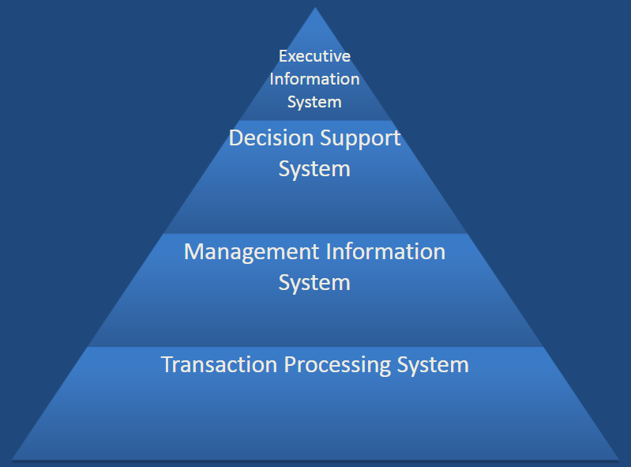

Learning needs to be done by examination of a variety of things and these thing are called data. To be able to learn, one has to see, touch, hear, or otherwise perceive thing in other words, these information are a basis for learning (Buckland, 1991). Data are facts that can be used to make decision or guide future research, the storage of vast quantities of data is called a database (Eldridge, 2024). Information is data given meaning, it is an embodiment of understanding by the way of analysis and interpretation through data (Bellinger, 2024), this means that information can only be created after there is data and after use of the information to acquire newly found knowledge data can be created as a by product (Tuomi, 1999).The distinction between data and information remains typically vague, as the terms data and information can be used interchangebly at any given moment (Boisot, 2004).
An information system simply put, are the components responsible for the collecting, storing, and processing of data which is used for providing information (Zwass, 2024). Its also important to point out, an information system has to have all components have to be present and working together to perform and achieve its objectives (Watson, 2007). Many organizations rely on these systems to carry out their operations a good example would be Business firms where they need to interact with their suppliers and costumers and compete in the market place (Bocij, 2008). In the last two decades, we have become more reliant on technology affecting our social and public life aswell as having a significant improvement on our quality of life. Organizations and consumers alike have opted for transactions to be done virtually, physical currency have transitioned to E-cash or Digital Cash (O’brien, 2006) this has open more opportunities for web-based businesses and many businesses started buying their own hardware and software to cater to their needs, the trend started in 1990s which gave rise to departmental computing (Heirschheim, 2012).
A support system in Information Systems refers to the components and mechanics of tools that assist users and administrators alike by helping them in managing, maintaining and troubleshooting information Systems. There are different categories of support systems:
This system allows for automation of collection, modification, and retrieval processes of worke level transactions (Mahar, 2003). It improve efficiency and reliability of business transactions.
This system provides assistance to managers by automating processes like managing business related activity that they would otherwise do manually. Traditional financial information management no longer meet the needs of companies making this system crucial to these companies’ modern operations (Lin, 2019).
This system allows for automation of collection, modification, and retrieval processes of consumer or organization level transactions (Mahar, 2003). It improve efficiency and reliability of business transactions.
This system helps executives like the CEO and other higher-level executive in planning and controlling workflow as well as making business decisions. For this type of support system to function efficienctly, it must meet the executive’s needs such as providing high-quality information that is quickly accessible (Rainer, 1995).